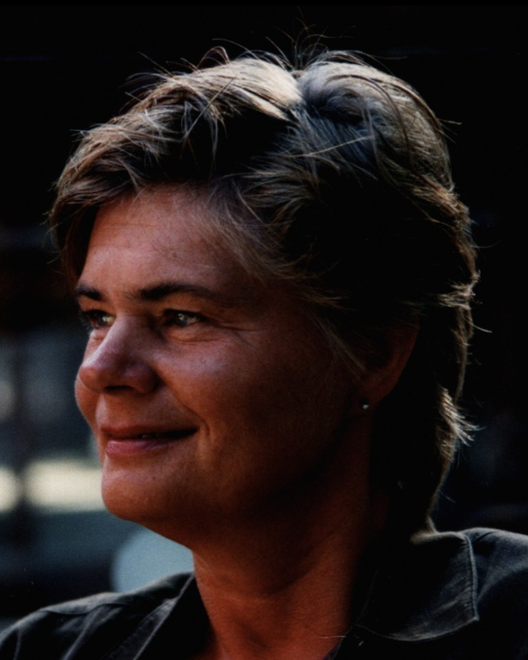

Else Margrethe ble brått revet bort. Hun hadde så vidt rukket å miste sin Floke, da hun for kort tid siden fikk en ubarmhjertig kreftdiagnose, som ikke ga henne noe håp.
Hun kom i 1972 som relativt fersk bibliotekar til det som den gang het Agder distriktshøgskole. Den var nylig opprettet, og jeg var den først ansatte på biblioteket. Else Margrethe ble min første faste medarbeider. Vi hadde trådd våre første biblioteksko i samme bibliotek, og hadde de samme vyer for hva vi ville med biblioteket i dette nye høgskoleslaget. Vi fikk etter hvert flere medarbeidere, og det ble 20 spennende år med et ADH i rivende utvikling. Da ble biblioteksjefstillingen på lærerhøgskolen ledig, og Else Margrethe arbeidet der, inntil hun tok over ledelsen av Kristiansand folkebibliotek etter Helge Terland. Ikke nok med det, men da jeg sluttet i min stilling ved Høgskolen i Agder, som litt senere ble Universitetet i Agder, så ledet hun universitetsbiblioteket til hun gikk av for aldersgrensen.
Else Margrethe spredde trygghet og glede overalt hvor hun arbeidet. Hun var faglig sterk, og samarbeidet godt med alle kolleger. Hun har satt dype spor etter seg i alle de tre bibliotekene hun har ledet, og vi er mange som vil savne henne. Vennekretsen er stor.

Som småbarnsmor tok hun et par fag ved universitetet mens hun var i full jobb. Vi som jobbet sammen med henne, merket ikke noe stress mens det sto på!
Sammen med Floke var hun i alle år en ivrig orienteringsløper, både i Søgne og i utlandet. Hun har sett skogene i mange land i Europa!
Else Margrethe var et overskuddsmenneske som det ikke går mange på dusinet av. Det har vært en glede å få jobbe sammen med henne, og ha henne som nær venn i så mange år. Hun er dypt savnet, og tankene går til barna Lars Thomas, Trine og Ole Johan, som har mistet begge foreldrene sine på kort tid.
Ingrid Terland